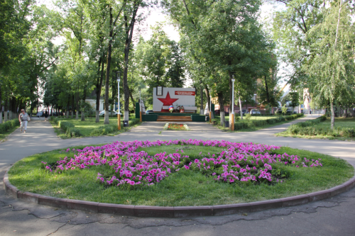

Места нашей области, посвящённые Великой Победе
 Домой
Домой
Памятник работникам Студёновского Рудоуправления
Место установки: ул. Кротевича г. Липецка. Мемориал расположен в сквере.
311 горняков Студеновского рудоуправления ушли на фронт, 77 из них погибли. Студеновские горняки свято чтут память павших. Торжественное открытие памятника, сооруженого силами самих горняков Студеновского рудоуправления, состоялось 8 мая 1975 года.
В центре мемориального комплекса на возвышении, образованном несколькими ступенями, расположена стела, которую украшает большая красная звезда. В левой верхней части стелы на мраморной плите золотом высечены слова: «Работникам Студеновского рудоуправления, отстоявшим свободу и независимость нашей Родины в 1941–1945 гг.». На красном фрагменте стелы надпись: «Люди, склоните головы перед светлой памятью героев, они не пожалели жизни для вашего счастья». По обеим сторонам стелы размещены гранитные и мраморные плиты с фамилиями участников Великой Отечественной войны. На плитах из розового камня высечены фамилии погибших в Великой Отечественной войне, на белых плитах – участников Великой Отечественной войны.
Изображения:
